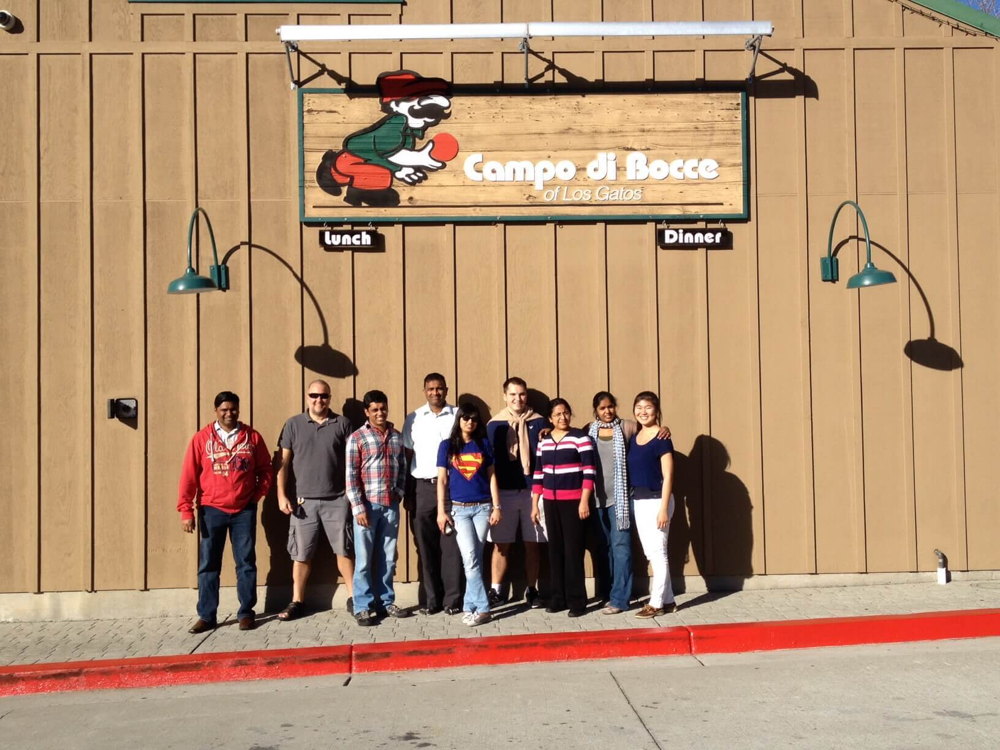

Cisco Systems
Spring and Summer 2014

Team outing to play bocce ball!
Team outing to play bocce ball!
The purpose of performing upgrade/downgrade tests was to insure that a given image was able to downgrade to a previous image and/or upgrade from that image while still running and without any traffic drops or other errors. I was given 5 images to test against 10 previous releases each. Upon an error, I would debug the specific protocol's script. For each of the five images, I logged all of the relevant output into files to send to my manager.